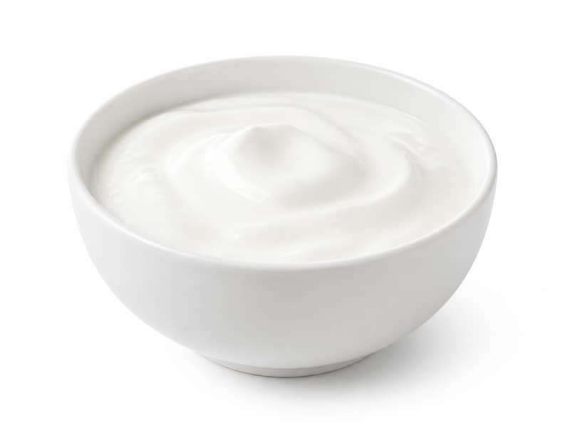

Nabiał i jaja
Jogurt naturalny
Jogurt naturalny: 4.3 g białka, 60 kcal, 6 g węglowodanów i 2 g tłuszczu na 100 g. Kategoria: Nabiał i jaja.
Kalorie60 kcalna 100 g
Białko / proteiny4.3 g
Węglowodany6 g
Tłuszcz2 g
Cena (szac.)~0,93 złza 100 g
Ceny zaktualizowano: maj 2026 (szacunek — ceny w popularnych supermarketach)
Porcja: kubek (150g)
| Kalorie | 90 kcal |
|---|---|
| Białko | 6.4 g |
| Węglowodany | 9 g |
| Tłuszcz | 3 g |
| Cena (szac.) | ~1,40 zł |
Szczegółowe składniki odżywcze na 100 g
| Wartość energetyczna (kalorie) | 60 kcal |
|---|---|
| Białko (proteiny) | 4.3 g |
| Węglowodany | 6 g |
| Tłuszcz | 2 g |
| Tłuszcze nasycone | 1.2 g |
| Tłuszcze nienasycone | 0.8 g |
| Witaminy i minerały | Probiotyki, Wapń, Witamina B2 |
| Współczynnik kcal / 1 g białka | 14.0 |
| Cena produktu (szac. za 100 g) | ~0,93 zł |
| Cena za 100 g białka (szac.) | ~21,71 zł |